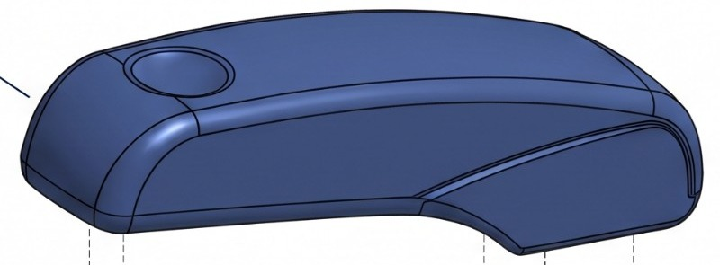

1Dış gövde
- Malzeme
- Mühendislik plastiği (ABS veya polikarbonat).
- Neden
- Ucuzdur ve darbeye dayanıklıdır. Enjeksiyonla kalıplanır; bu sayede iç nervürlü duvarlar ve kavisli formlar yapılabilir.
- İşlevi
- Elin dokunduğu kısımdır: keskin kenar olmadığı için ağrılı baskı noktası oluşmaz. İç mekanizmayı korur.